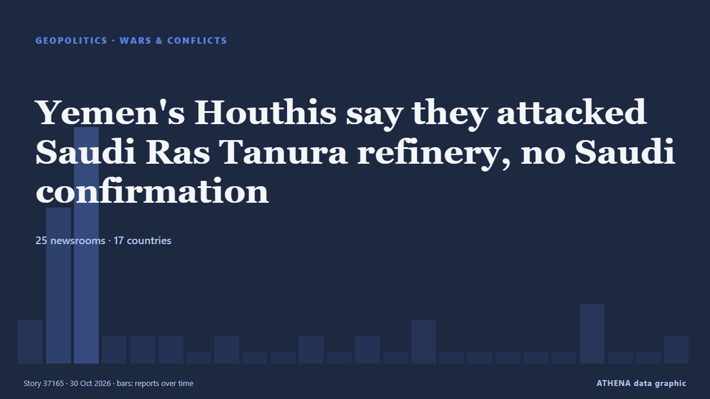

Yemen's Houthis say they attacked Saudi Ras Tanura refinery, no Saudi confirmation

Yemen's Houthis claimed attacks on three Saudi oil facilities and two international airports. de The Jerusalem Post
Relayé de façon indépendante par 26 médias dans 17 pays depuis le 27 oct. ; premier à l'annoncer : Oman Observer ; la couverture faiblit. ATHENA juge le risque accru (4.8/10), surtout en raison de la gravité des dommages décrits et de sa portée géographique et sectorielle. La confiance est de 86 % (élevée) : 26 médias indépendants le confirment, avec une fiabilité moyenne des sources de 78 %. Médias par pays : États-Unis (6), Turquie (4), Pakistan (3). Couverture : du 27 oct. au 30 oct., 72 heures.
Pourquoi c'est important: La mer Rouge et le détroit de Bab el-Mandeb forment la route maritime la plus courte entre l'Asie et l'Europe, par le canal de Suez. Les attaques contre les navires marchands obligent à contourner l'Afrique, avec un surcoût en temps et en argent pour le commerce mondial.
Ce qui a changé : 4 nouveaux articles de 4 rédactions dans les 24 heures jusqu'au 30 oct..
Premier titre : Yemen’s Houthis Say They Hit Saudi Ras Tanura Oil Refinery With Missile
Les titres sont affichés en anglais, tels que publiés.
En un coup d'œil
Sélectionné, noté et rédigé par la méthodologie publiée d'ATHENA. Aucun rédacteur n'intervient sur un événement en particulier. Comment il est produit ›
| 27 Oct 07:33 UTC | 2 |
|---|---|
| 27 Oct 10:33 UTC | 9 |
| 27 Oct 13:33 UTC | 14 |
| 27 Oct 16:33 UTC | 1 |
| 27 Oct 19:33 UTC | 1 |
| 27 Oct 22:33 UTC | 1 |
| 28 Oct 01:33 UTC | 0 |
| 28 Oct 04:33 UTC | 1 |
| 28 Oct 07:33 UTC | 0 |
| 28 Oct 10:33 UTC | 0 |
| 28 Oct 13:33 UTC | 1 |
| 28 Oct 16:33 UTC | 0 |
| 28 Oct 19:33 UTC | 1 |
| 28 Oct 22:33 UTC | 0 |
| 29 Oct 01:33 UTC | 2 |
| 29 Oct 04:33 UTC | 0 |
| 29 Oct 07:33 UTC | 0 |
| 29 Oct 10:33 UTC | 0 |
| 29 Oct 13:33 UTC | 0 |
| 29 Oct 16:33 UTC | 0 |
| 29 Oct 19:33 UTC | 3 |
| 29 Oct 22:33 UTC | 0 |
| 30 Oct 01:33 UTC | 0 |
| 30 Oct 04:33 UTC | 1 |
| 27 Oct 09:07 UTC | 1.2 |
|---|---|
| 27 Oct 11:46 UTC | 2.9 |
| 27 Oct 11:47 UTC | 5.0 |
| 27 Oct 12:45 UTC | 5.5 |
| 27 Oct 16:45 UTC | 6.4 |
| 27 Oct 16:49 UTC | 5.5 |
| 28 Oct 00:38 UTC | 4.8 |
| 30 Oct 07:53 UTC | 4.9 |
| 30 Oct 07:53 UTC | 4.8 |
Pourquoi ces chiffres
Importance
Risque
Confiance
La couverture : qui l'a annoncé, et quand
titre tel que publié · ouvre l'original- Oman Observer · OmanAnsar Allah say they launched an attack on Saudi Ras Tanura oil refinery
- Türkiye Today · TurquieOil prices rise as Saudi Ras Tanura hub catches fire after Houthi attack
- The Straits Times · SingapourHouthis claim attack on Saudi Arabia’s biggest oil refinery; blasts shake Riyadh
- Business Recorder · PakistanYemen's Houthis say they launched an attack on Saudi Ras Tanura oil refinery
- Al-Monitor · États-UnisYemen's Houthis say they hit Saudi Ras Tanura oil refinery with missile
- The Daily Star — page reader · BangladeshHouthis say they launched an attack on Saudi Ras Tanura oil refinery
- OilPrice.com · Royaume-UniRas Tanura Fire Follows Attacks on Aramco Offices and Near Shaybah Field
- TASS (English) · RussieHouthis claim ballistic missile attack on oil refinery in eastern Saudi Arabia
- The National · Émirats arabes unisMiddle East latest: Saudi Arabia reports missile interception damage in Riyadh as Houthis claim more attacks
- Anadolu Agency (English) · TurquieYemen’s Houthis claim missile attack on Saudi Arabia’s Ras Tanura oil refinery
- Xinhua (English) — page reader · ChineSaudi-led coalition says intercepted missiles launched toward Riyadh; Houthis claim attack on Saudi oil refinery
- Middle East Eye · INTHouthis hit Saudi refinery as Iran warns of ‘devastating’ response to further US-Israeli attacks
- The New Arab · INTHouthis claim attack on Saudi oil refinery, blasts shake Riyadh
- NDTV · IndeHouthis Claim Missile Strike On Saudi Oil Refinery As Blasts Shake Riyadh
- gCaptain · États-UnisYemen’s Houthis Say They Hit Saudi Ras Tanura Oil Refinery With Missile
- Al-Monitor · États-UnisSaudi oil infrastructure in crosshairs as Houthis claim Ras Tanura strike
- The Business Times · SingapourYemen’s Houthis say they hit Saudi Ras Tanura oil refinery with missile
- Business Recorder · PakistanYemen's Houthis say targeted Saudi defence ministry in Riyadh
- Anadolu Agency (English) · TurquieHouthis claim targeting 4 locations in Saudi Arabia with ballistic missiles, drone
- The Jerusalem Post · IsraëlHouthis claim to have hit Saudi Ras Tanura oil refinery, defense ministry with ballistic missiles
- NDTV · Inde"Direct Hit": Houthis Claim Targeted Saudi Ministry With Ballistic Missile
- Rigzone · États-UnisAramco Contains Fire Near Ras Tanura Oil Hub
- Shafaq News (English) · IrakHouthis claim attacks on Saudi defense ministry
- Türkiye Today · TurquieHouthis say they fired missiles at Saudi defence ministry and Ras Tanura refinery
- Khaama Press · AfghanistanYemen’s Houthis Say They Hit Saudi Arabia’s Ras Tanura Oil Refinery
- The Maritime Executive · États-UnisYemen's Houthi Rebels Strike Saudi Aramco's Ras Tanura Oil Terminal
- Rappler · PhilippinesSaudi’s biggest oil refinery hit with missile, say Yemen’s Houthis
- APA (English) · AzerbaïdjanNazaha President: Saudi Arabia will take all necessary measures against Houthis
- Business Recorder · PakistanGulf equities mixed as Ras Tanura strike unnerves investors
- The Rio Times · BrésilSaudi Refinery Claim Lifts Oil Near US$115
- CGTN (World) · ChineSaudi-Houthi attacks continue as both sides report strikes
- The Maritime Executive · États-UnisStrike Damage Confirmed at Giant Saudi Refinery Complex
- Middle East Eye · INTHouthis claim six attacks on Saudi Arabia airports and oil facilities
- Xinhua (English) — page reader · ChineYemen's Houthis claim attacks on Saudi oil, aviation, military targets
- The Jerusalem Post · IsraëlYemen's Houthis say they attacked Saudi Ras Tanura refinery, no Saudi confirmation
- OilPrice.com · Royaume-UniHouthis Claim Fresh Strikes on Saudi Oil Refineries and Aramco Facilities